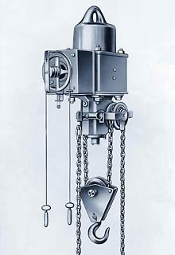
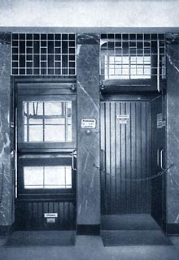

A Primeira Talha Elétrica e o Paternoster
Em 1903, como benefício da segunda revolução industrial, houve uma maior disponibilidade de energia elétrica. A partir desse cenário, R. STAHL desenvolveu seu primeiro modelo de talha elétrica, usando pela primeira vez a corrente de elos calibrada como elemento de suporte.

Primeira Talha
Em paralelo a criação do primeiro modelo de talha elétrica, a empresa começou a desenvolver um elevador. Batizado de Paternoster*, até hoje é popular e inspira nostalgia e respeito devido a tecnologia envolvida no projeto.

Paternoster
O primeiro foi instalado no edifício Graf Eberhard em Stuttgart.
* O Paternoster é um elevador de movimento constante, sem portas, onde as pessoas entram e saem quando querem.
Produtos STAHL:
- Talha elétrica de corrente
- Talhas elétricas de cabo de aço
- Ponte rolante apoiada univiga
- Ponte rolante apoiada dupla-viga
- Pontes rolantes suspensas
- Guindaste giratório
- Monovias
- Blocos de rodas
- Kit de componentes
Peças sobressalentes; manutenção preventiva e corretiva
Consultoria especializada em transporte e movimentação de carga e fornecimento de componentes para outros fabricantes.
Todos os equipamentos podem ser fornecidos na versão á prova de explosão.